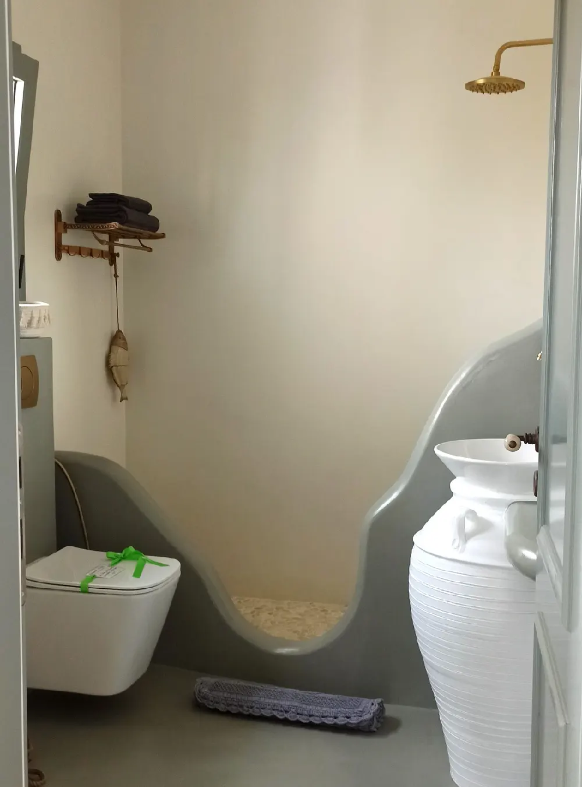

ΤΟ ΣΠΙΤΙ
Φιλόξενο, ζεστό, εκλεπτυσμένο, αυθεντικό
Το La Maison Vert Amande είναι ένα μέρος που μοιάζει με τους ιδιοκτήτες του: φιλόξενο, ζεστό, εκλεπτυσμένο και αυθεντικό. Τίποτα επιδεικτικό. Ένα γαλήνιο καταφύγιο, μακριά από τη θρυλική φασαρία των νησιών.
Περιτριγυρισμένοι από πράσινο και ελαιώνες, θα σας μαγέψει η ηρεμία και η ανόθευτη ομορφιά του τοπίου. Η ζεστή ατμόσφαιρα του δωματίου, η δική του ιδιωτική είσοδος και οι δύο πολύ μεγάλες βεράντες με εκπληκτική θέα στη θάλασσα σας επιτρέπουν να αποσυρθείτε και να θαυμάσετε την ανατολή του ηλίου και το ηλιοβασίλεμα.
Ελπίζουμε οι επισκέπτες μας να απολαύσουν μια απλή ζωή σε έναν χώρο που σέβεται το περιβάλλον και είναι ένας πραγματικός οικογενειακός ξενώνας. Καθημερινά φροντίζουμε ώστε οι επισκέπτες να απολαμβάνουν μια υπέροχη διαμονή σε ένα άνετο και ευρύχωρο δωμάτιο, και είμαστε πάντα στη διάθεσή τους για να το πετύχουμε.
Ο ξενώνας μας είναι επίσης γνωστός χάρη στις συστάσεις των ικανοποιημένων επισκεπτών μας.



ΤΟ ΔΩΜΑΤΙΟ
20 m², φωτεινό και μόνο για εσάς
- 20 m² και πολύ φωτεινό, με απευθείας πρόσβαση σε δύο πολύ μεγάλες βεράντες
- Ανεξάρτητη ιδιωτική είσοδος από εξωτερική σκάλα
- Πραγματικό διπλό κρεβάτι king-size, μεγάλη ντουλάπα και ψυγείο
- Ιδιωτικό μπάνιο με ντους, WC και θερμαινόμενη πετσετοκρεμάστρα
- Πιστολάκι μαλλιών · δωρεάν Wi-Fi · κανονικές πρίζες ρεύματος
- Τσάι και καφές (χωρίς δυνατότητα μαγειρέματος)
- Θέρμανση τον χειμώνα · μεγάλος ανεμιστήρας οροφής · σίτες για τα κουνούπια (χωρίς κλιματισμό)
- Ιδιωτικός χώρος στάθμευσης · απαγορεύεται το κάπνισμα · δεν επιτρέπονται κατοικίδια